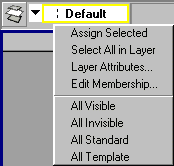

buildLayerBarMenu
The ‘buildLayerBarMenu.mel’ script replaces the function of the same name
contained within the standard Maya script installed as:
\AW\Maya2.5\scripts\startup\layerBar.mel
Warning! The contents of this function are originally from Maya v2.5.1. Beware replacing this function under Maya v3!
This enhancement adds four functions to the RMB Context Menu for the Default displayLayer:
All Visible
All Invisible
All Standard
All Template
Note: These functions affect the displayLayers and not individual object nodes.